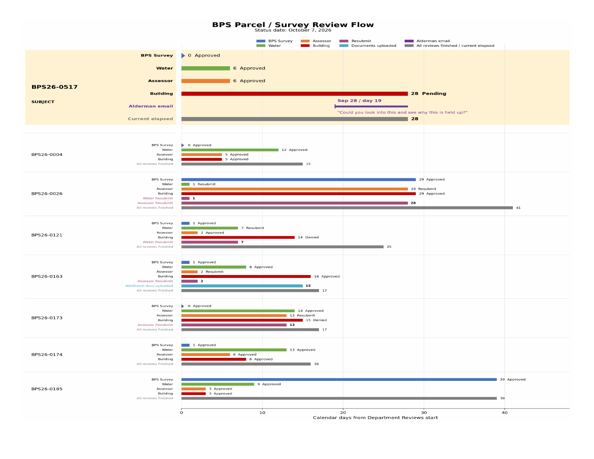

The process
Every parcel/survey permit passes through these reviews before the Board approves it:
1 · BPS Survey→2 · Water→3 · Assessor→
4 · Building (Public Safety)→5 · Board approval
How many clear, and when
In 2026 the Board approved 57 parcel/survey matters — a steady flow every month. (Board-approval dates, from the public minutes.)
How Building review compares
For cases where both dates are public, Building review runs from a few days to about four weeks. The one case that took as long as BPS26-0517 carried a documented deficiency — this one shows none.

Small, non-random sample (n=9); the population distribution needs the City's workflow data, requested via public records. See Methods.
The case in one line: every other department cleared
BPS26-0517 by Sept 15; Building has sat with no date assigned and no stated
deficiency, while 57 comparable matters moved through. See the case →